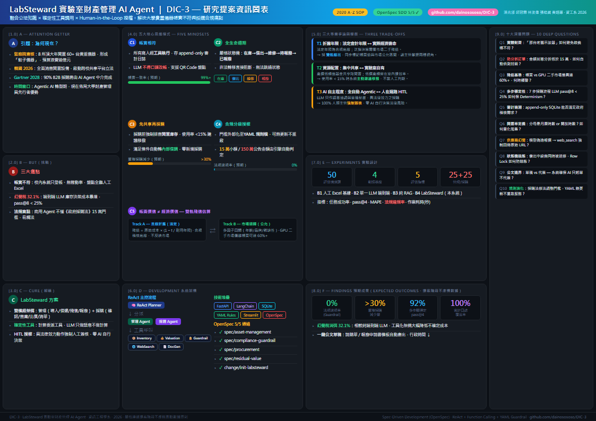

整合公法知識、確定性工具調用與人在迴路授權，解決大學實驗室財產帳實不符與採購合規痛點
作者團隊：潘兆邠、邱冠霖、林浚偉、張皓崴、黃翊豪（資訊工程學系）
採購法規違規率
(Guardrail 阻斷)
消弭 LLM 端到端幻覺稅
(vs. 純端到端)
多步驟穩定度
pass@4
實驗室情境
基準測試評估集

| SOP 代號 | 規範意義 | LabSteward 專案落實內涵 |
|---|---|---|
| [A] Attention Getter | 動機與引題 | 監察院調查：8 所頂大年閒置 60+ 台貴重儀器（蚊子儀器）。韓國 2026 年全面清查閒置設備。Gartner 預估 2028 年 90% B2B 採購由 AI Agent 中介。大學財產管理即將迎來 Agentic 轉型。 |
| [B] But | 深層挑戰 | 校內系統僅登帳無稼動率；端到端 LLM 庫存決策成本高出 32.1%（幻覺稅），多步驟穩定度 pass@8 < 25%；商用 Agent 不懂《政府採購法》15 萬門檻與最低耐用年限。 |
| [C] Cure | 解藥與方案 | LabSteward：融合公法知識與確定性工具調用的雙模組 AI Agent，涵蓋「管理」（導入、借還、殘值、報廢）與「採購」（需求確認、查庫存、比價、清單產出）兩大主軸。 |
| [D] Development | 架構設計 | LLM ReAct Planner 負責語意協調；計算全數交由 SQLite、雙軌殘值模型、實體對齊演算法、YAML Guardrail 規則引擎處理。所有帳務異動留存審計日誌並經 Human-in-the-loop 人工簽核。 |
| [E] Experiments | 實驗設計 | 50 題真實情境測試集（25 管理、25 採購），對比 B1 人工 Excel、B2 單一 LLM 端到端、B3 純 RAG 問答。指標：任務成功率、pass@4、MAPE、違規率、作業耗時。 |
| [F] Findings | 預期成果 | 法規違規率降為 0%；「先查庫存再採購」流程減少 >30% 重複採購；雙軌殘值提供帳面與市場公允區間；一鍵產出標準報廢與請購公文草稿。 |
會計年限為合規稽核底線，汰換決策需看市場二手殘值。方案：採雙軌估值並標記信心度區間，讓決策者同時掌握兩種視角。
高價低頻儀器走共享降低閒置；低價高頻留在室內提升效率。當設備使用率低於 15% 時，系統主動建議開放移撥。
LLM 只作語意協調與草稿秘書，具法律效力之採購與報廢動作強制經人類主管簽核授權，零 AI 自行決策風險。
openspec/proposal.md
Why & What：動機、範疇、非目標
openspec/specs/
5 份規格：asset-management, compliance-guardrail, procurement, residual-value, eval-harness — WHEN/THEN 情境驗收
DESIGN.md
PA–PM 系統組件、4 大演算法、ERD 圖、殘值公式
openspec/tasks/
Sprint 任務追蹤：已完成 / 規劃中
openspec/change/
版本控制的規格演化記錄
| 組件 | 角色 | 技術實作 |
|---|---|---|
| ReAct Planner | 主控 Agent | LangChain ReAct 狀態機, agent/planner.py |
| Management Agent | 財產管理模組 | M1導入 / M2借還 / M3殘值 / M4報廢, agent/management_agent.py |
| Procurement Agent | 採購模組 | P1確認 / P2查庫 / P3比價 / P4清單（強制庫存前置） |
| Inventory Tool | 資料庫 | SQLite 狀態機 + append-only 審計日誌, tools/inventory.py |
| Valuation Tool | 雙軌殘值 | 直線折舊法 + 市場迴歸模型, tools/valuation.py |
| Guardrail | 法規引擎 | YAML 規則庫, 15萬/150萬門檻, 防分拆訂單偵測 |
| Web Search | 比價工具 | 供應商搜尋 + TCO 排名 + URL 強制佐證 |
| DocGen | 公文草稿 | 請購單 / 報廢申請書模板產出器 |